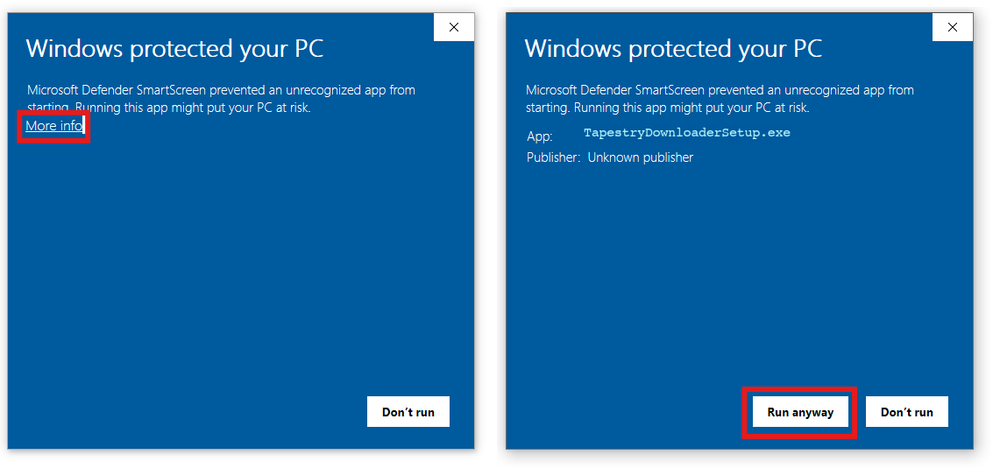

Installation Guide & Troubleshooting
Because Tapestry Journal Downloader is built by independent developers, it does not currently have an expensive corporate code signing certificate. As a result, your operating system might show a warning when you try to open it for the first time.
Windows Guide
When you double-click the .exe file or installer, Windows Defender SmartScreen might block it from starting.
Step 1: Click "More info"
When the blue "Windows protected your PC" screen appears, click the underlined text that says More info.
Step 2: Click "Run anyway"
A new button will appear at the bottom right. Click Run anyway. The app will now open and install normally. Windows will remember your choice for this version.

macOS Guide
macOS Gatekeeper is very strict about unsigned applications. Depending on your macOS version, you might see a warning that the app "cannot be opened because the developer cannot be verified" or that it "is damaged and should be moved to the Trash".
Method 1: Right-Click to Open (Easiest)
- Find the downloaded application in your
DownloadsorApplicationsfolder. - Do not double-click it. Instead, hold the Control (⌃) key on your keyboard and click the app icon (or simply Right-Click the icon).
- Select Open from the menu that appears.
- A warning box will pop up, but this time it will have an Open button. Click it to launch the app. You only need to do this once.
Method 2: Using Terminal (If it says "App is damaged")
macOS sometimes quarantines downloaded apps. If the right-click method doesn't work and macOS says the app "is damaged and cannot be opened", follow these steps:
- Move the
Tapestry Journal Downloader.appinto your Applications folder. - Open the Terminal app (you can find it in Applications > Utilities, or by searching in Spotlight).
- Copy and paste the exact command below into the Terminal and press Enter:
This command simply removes the quarantine attribute from the download. Once executed, you can double-click the app from your Applications folder normally.
Still having trouble? Contact Support